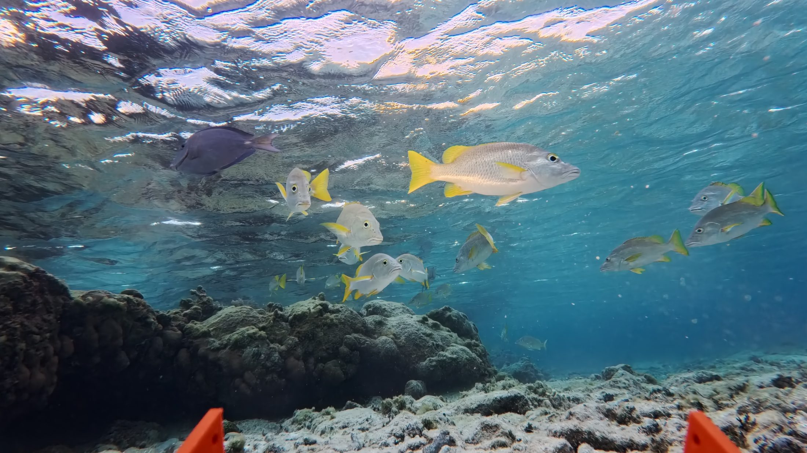
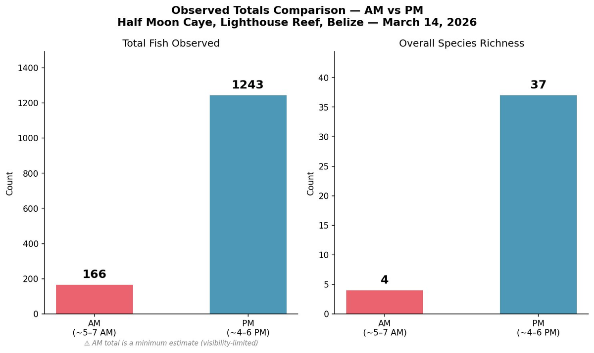
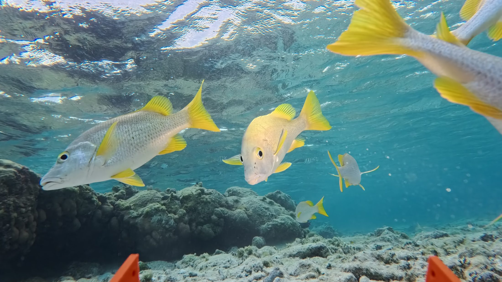
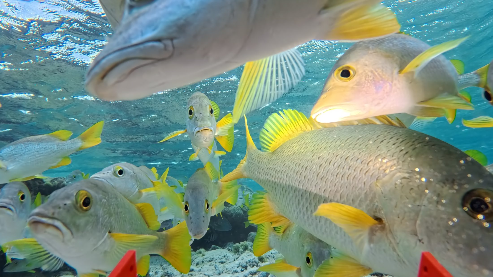

Every build has its own page — assembly, testing, deployment, and specs. From boat-towed reef housings to MATLAB tools, here is the whole shelf.

Hydrodynamic boat-towed underwater camera housing for seafloor transect imaging. Named for the triggerfish genus.
Camera housing · Field-testedWaterproof PCB-based depth sensor and recorder. Named for the sea cucumber genus. Deployed in Belize.
Depth sensor · PCBHeat-resistant capsule with Arduino PCB, thermocouple sensors, and datalogger. Built for drone-deployed wildfire data collection.
Thermal · Drone payloadSenior capstone drone winch system, built by team Winchcraft. I led the team.
Capstone · Mechatronics[Owner to add description]
Pressure sensor PCB
Independent field study of crepuscular reef fish at Lighthouse Reef, Belize — comparing the dawn and dusk communities on one patch reef. Named for the Latin word for twilight.
Independent study · BelizeEGR 311 final project. Sensor-driven closed-loop feedback system for automated plant irrigation.
Closed-loop control
MATLAB app — automated laser-dot scaling tool for benthic transect photos from the Balistes housing.
MATLAB · Image analysis
MATLAB app (GUI, uifigure) — photo annotation tool for counting species in reef survey images. Exports CSV.
MATLAB · GUIMATLAB app (GUI, uifigure) — fully functional Wordle with colored tile grid, virtual keyboard, multiplayer, and stats.
MATLAB · GameThe original MATLAB command-line build — feedback legend, hints, single & multiplayer modes, and a colored attempts leaderboard.
MATLAB · GameMATLAB — 15-question interactive trivia on Russian and Slavic folklore.
MATLAB · Trivia